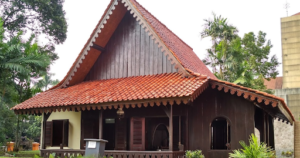

Sejarah

Nama "Betawi" berasal dari kata "Batavia" yang lama kelamaan berubah dikarenakan penyesuaian dengan lidah atau aksen warga lokal. Secara historis, suku Betawi merupakan masyarakan multietnik yang membaur dan membentuk sebuah entitas baru. Suku betawi terlahir karena adanya percampuran genetik atau akulturasi budaya antara masyarakat yang mendiami batavia. Setelah adanya percampuran budaya, adat-istiadat, tradisi, bahasa, dan yang lainnya, maka mulai terbentuklah sebuah komunitas besar di Batavia. Komunitas ini lama kelamaan melebur menjadi suku dan identitas baru yang dinamakan Betawi. Penggunaan kata Betawi sebagai sebuah suku diawali dengan pendirian sebuah organisasi bernama Pemoeda Kaoem Betawi yang berdiri pada tahun 1923.
Kebudayaan
Pakaian Adat
-
Kebaya Encim
salah satu pakaan adat betawi yang paling sering ditampilkan adalah kebaya encim untuk wanita. Pakaian ini terdiri dari atasan yang disebut kerancang yang memiliki bordiran bermotif bunga, yang dipadukan dengan kain sarung dengan model beragam, seperti model buket, pucuk rebung, atau kain pagi sore. biasanya rambut wanita akan dihias menggunakan sanggul, dan dipasangkan dengan kerudung yang menampakan sedikit bagian rambut Pakaian adat betawi satu ini kerapkali digunakan saat momen-momen pekan raya Jakarta, seragam karyawati instansi pemerintah dan swasta, peringatan hari besar, menerima tamu istimewa, pentas seni budaya dan acara-acara lainnya
-
Baju Sadaria

baju sadaria digunakan oleh para laki-laki Betawi dan seringkali dipasnagkan dengan kebaya Encim. Baju ini berupa baju taqwa atau baju koko yang berkerah shanghai. umumnya pakaian ini berwarna putih dan berlengan panjang, baju ini dipadankan dengan dua pilihan celana, yakni celana bahan panjang berwarna gelap atau celana komprang dengan motif batik. sebagai pelengkap, para pria betawi menggunakan kopiah berwarna hitam polos sebagai penutup kepala. Kemudia terdapat kain sarung yag dilipat digantungkan di leher yang biasanya dipegang dengan kedua tangan saat sesi foto
Rumah Adat
-
Rumah Kebaya

Disebut sebagai rumah kebaya dikarenakan bentuk atap rumah ini mirip dengan pelana yang dilipat, dan apabila dilihat dari samping, maka lipatan-lipatan tersebut akan nampak seperti lipatan pada kain kebaya. Ruangan pada rumah ini terbagi menjadi dua area, yaitu area publik umumnya berada di bagian depan rumah, yang digunakan untuk menyambut tamu, kemudia ada juga area pribadi yang berisi kamar tidur, ruang makan, dan lain sebagainya.
-
Rumah Gudang

Rumah gudang memiliki bentuk yang memanjang layaknya persegi panjang. Atapnya memiliki struktur pelana di atasa dilengkapi dengan jurang dan perisai. Lalu struktur kudanya dipaka untuk struktur atap pada rumah gudang. Rumah ini pun juga terpadi menjadi dua area, yaitu bagian depan digunakan untuk menerima tamu, kemudian bagian tengah atau dalam untuk dapur dan kamar tidur.
Tarian
-
Tari Ronggeng Blantek

Tari ronggeng blantek adalah tarian daerah etnis Betawi yang memiliki tempo cepat dengan gerakan energik. Tarian ini biasanya terdiri dari penari perempuan dengan kostum berwarna cerah dengan hiasan kepala bunga. Tarian diiringi dengan alat musik tradisional Betawi, yakni terompet, trombone, baritonem gendang, gong, simbal, dan tehyan. Tarian ini biasanya dilakukan untuk menyambut tamu undangan dalam acara-acara besar.
Alat Musik
-
Tanjidor

Alat musik tanjidor merupakan alat musik khas betawi yang populer sama sekarang. Alat ini awalnya dimainkan oleh budak-budak Belanda di Batavia.Tanjidor sebagai alat musik yang dimainkan seacara berkelompok, yang terdiri dari alat musik pukul seperti tamburm dan alat musik tiup seperti tombon, tenor, piston, dan clarinet. Tanjidor dimainkan dengan lagu daerah seperti jali-jali. dan juga digunakan untuk mengiringi acara-acara besar.
-
Gambang Kromong
akat musik ini terdiri dari 2 jenis alat yaitu gampang yang terbuat dari bilah kayu yang berjumlah 18 bilah dan berbentuk perahu, masing-masing bilah dapat menghasilkan nada yang berbeda sesuai dengan ukurannya. ada juga alat kromong atau bonang, alat seperti gambang akan tetapi ini terbuat dari logam. kedua alat ini dimainkan dengan cara yang sama yaitu dipukul. alat musik ini digunakan untuk mengiringi kesenian gambang kromong.
Senjata
-
Bendo atau Golok

golok merupakan senjata dengan bilah panjang dan tajam yang dibuat dari besi baja serta dengan gagang yang terbuat dari kayu yang keras. Sarung pada golok terbuat dari kayu yang digunakan untuk menyimpan golok. Golok terbagi dalam tiga jenis, yaitu golok kerja digunakan untuk keperluan rumah tangga seperti urusan dapur atau untuk memotong tanaman. lalu ada golok simpenan yang biasa digunakan untuk memotong hewan. dan terakhir golok sorenan pinggang berguna untuk berjaga-jaga dan mempertahankan diri dari musuh.
Tokoh Betawi
Benyamin Sueb

H. Benyamin Sueb (5 Maret 1939 - 5 September 1995) adalah pemeran, pelawak, sutradara dan penyanyi Indonesia. Benyamin menghasilkan lebih dari 75 album musik dan 53 judul film. Benyamin Sueb masuk ke dalam daftar The Immortals: 25 Artis Indonesia Terbesar Sepanjang Masa versi majalah Rolling Stone Indonesia.
Credit